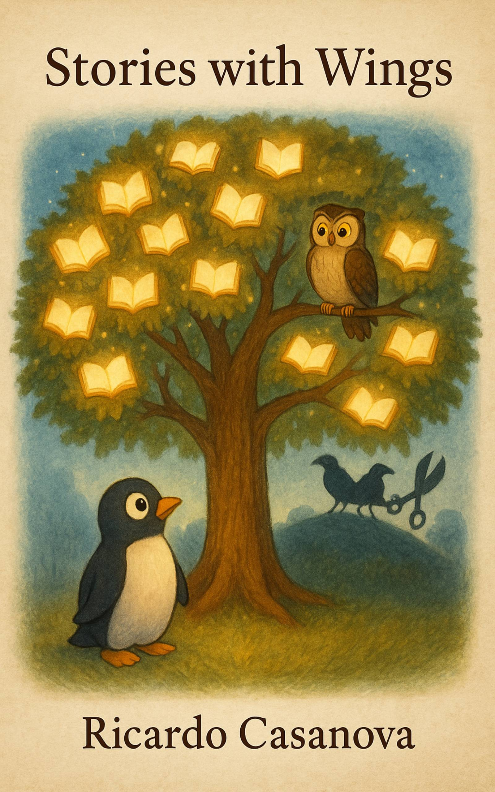
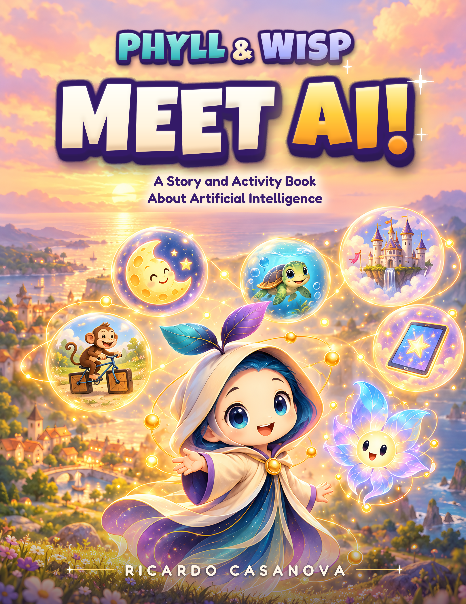

AI · November 18, 2026
The Machine Economy
What happens when AI agents can buy services, exchange information and conduct business without us?
Read article ↗Ricardo Casanova · Independent writing
Thoughts, observations, arguments and the occasional rant about artificial intelligence, technology, business, people and the absurdity of it all. These are my own views. They aren't company statements, and I reserve the right to change my mind when presented with a better argument.
One idea worth spending a little more time with.
Why trust, reputation, and relationships may become our greatest competitive advantage in an age when products are easier than ever to imitate.
Read the featured article ↗Three recent essays.
What happens when AI agents can buy services, exchange information and conduct business without us?
Read article ↗How sensors, edge computing, robotics and next-generation networks are bringing AI into the physical world.
Read article ↗What unlimited mobile data can teach us about the future economics of artificial intelligence.
Read article ↗Innovation, accountability, and the systems shaping our world.
What happens when AI makes creating and copying equally accessible?
Read article ↗Why public outrage over AI data centres is growing faster than the evidence needed to evaluate their impacts.
Read article ↗ AI · October 30, 2026
AI · October 30, 2026AI can accelerate product, design and engineering, but cannot eliminate the need for their collective expertise.
Read article ↗Examining the incentives behind frontier AI companies voluntarily disclosing their own safety failures.
Read article ↗Why human unpredictability and noisy sensory signals are the next challenge for embodied AI.
Read article ↗How embodied AI could acquire verified, targeted skills at runtime through edge intelligence and machine marketplaces.
Read article ↗What sudden model restrictions and regulatory scrutiny reveal about enterprise AI dependencies.
Read article ↗Why the hyperscale AI construction boom risks leaving governments with expensive infrastructure and little lasting local value.
Read article ↗Business, relationships and the human side of work.
On losing my social confidence, rediscovering community, and learning to show up again.
Read article ↗Why black-box AI faces serious problems around trust, compliance and governance, and why executives need to ask harder questions.
Read article ↗Why human imagination, perspective and emotional connection matter even more as AI-generated content proliferates.
Read article ↗Unifying a fragmented provincial healthcare communications network.
Read case study (PDF) ↗Published titles and stories in progress. Scroll to explore.
Published · Executive communication
Explore book ↗
Published · Illustrated allegory
Explore book ↗Forthcoming · Poetry and prose
Explore book ↗
Upcoming · Children's story and activities
Explore book ↗